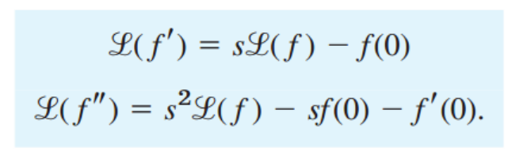
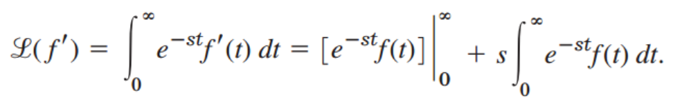

마지막으로, ODE를 푸는 가장 가장 중요한 방법으로 마무리 해보자.
Laplace Transform
적분 가능한 함수 f(t) -> L(f) = F(s) 형태로 바꿔주는 것이다.
![[Engineering Mathematics] Ch 6. Laplace Transform - Concepts](./images/img-001.png)
일단 간단한 성질을 파악하고, 왜 이렇게 바꿔주는지를 탐구해보자.
Reverse Laplace transform도 가능하고,
Inverse Transform 이라 부른다.
![[Engineering Mathematics] Ch 6. Laplace Transform - Concepts](./images/img-002.png)
1. 선형성
![[Engineering Mathematics] Ch 6. Laplace Transform - Concepts](./images/img-003.png)
Linearity 한 것을 확인 할 수 있다. 적분이기 때문에, 자명하다.
2. 이동
s -> s-a로 Laplace 변환값을 이동하고 싶은 경우, f(t) 대신 e^at f(t)를 넣어주여야 한다.
![[Engineering Mathematics] Ch 6. Laplace Transform - Concepts](./images/img-004.png)
3. 해 존재 유무
a) Growth restriction
![[Engineering Mathematics] Ch 6. Laplace Transform - Concepts](./images/img-005.png)
쉽게 풀어보면, 적분 안쪽을 살펴보자.
f(t) 가 만약에 (e^st)^2 이라고 생각해보자.
그렇다면 integral 안에는 e^st 가 될 것이다.
그 경우, Integral 값은 발산하므로, Laplace 해가 존재 하지 않을 것이다.
그니까 f(t)가 e^st를 소거하고도 증가하는 함수이라면 -> Laplace 해 발산 존재 x
b) Piecewise continuous.
결국, Laplace solution은 적분 한 값이다.
따라서, 적분이 모든 구간 내에서 가능해야 한다.
사실, 적분은 불연속적이어도 가능하다. 하지만,
밑의 그림처럼, 불연속인 점들이 존재하지만, 연속적인 구간들로 나눌 수 있어야 한다.
즉, 총 t의 구간을 불연속인 점들을 기준으로 구분 했을때,
연속적인 interval 들의 합으로 총 t의 구간을 표현 할 수 있으면 -> Piecewise continuouse 라 정의한다.
![[Engineering Mathematics] Ch 6. Laplace Transform - Concepts](./images/img-006.png)
4. 미분

Laplace의 해가 존재한다면(3번 조건 전부 만족하면)
우리는 단순하게 Laplace의 정의에 따라, 미분 값을 구할 수 있다.

미분을 n번째 까지 연속적으로 한다면,
![[Engineering Mathematics] Ch 6. Laplace Transform - Concepts](./images/img-009.png)
5. 적분
![[Engineering Mathematics] Ch 6. Laplace Transform - Concepts](./images/img-010.png)
g'(t) = f(t) 라고 하자, g(T) 는 f(t)의 적분 값, g(0) = 0
![[Engineering Mathematics] Ch 6. Laplace Transform - Concepts](./images/img-011.png)
이제 진짜 ODE에 적용해보자 Laplace를 사용하면 어떻게 되는지 왜 이득인지 살펴보자.
2nd order Non-homogeneous Linear ODE
![[Engineering Mathematics] Ch 6. Laplace Transform - Concepts](./images/img-012.png)
좌항 우항 모두 Laplace 변환을 해주자.
[Y = L(y) , y의 라플라스 변환값, R = L(r) , r(t) 의 라플라스 변환값]
![[Engineering Mathematics] Ch 6. Laplace Transform - Concepts](./images/img-013.png)
![[Engineering Mathematics] Ch 6. Laplace Transform - Concepts](./images/img-014.png)
우리의 목표는 Y를 구하는것, 따라서 양쪽에 새롭게 정의한 Q(s), transfer function, 를 곱해주자.
![[Engineering Mathematics] Ch 6. Laplace Transform - Concepts](./images/img-015.png)
최종적으로,
![[Engineering Mathematics] Ch 6. Laplace Transform - Concepts](./images/img-016.png)
그리고 Laplace 역변환으로 y를 구해준다.
그니까, 라플라스 변환을 하면, nth order항들 모두다 쉽게 표현이 가능하다는 것이다.
Laplace Table
![[Engineering Mathematics] Ch 6. Laplace Transform - Concepts](./images/img-017.png)